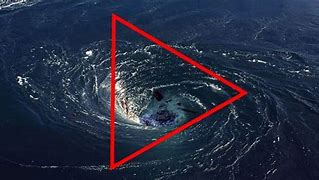

BERMUDA TRIANGLE
bermuda triangle section of the north atlantic ocean off north america in which more than 50 ships and
20 airplanes are said to have mysteriosly disappered. the area whose boundary are not unniversally agreed
upon, has a vaguely trianglar shape marked by the atlantic coast of florida panhandle ( in th united states)
bermuda, and the greater antilles.
reports of unexplained occurrences in the region date to the mid 19th century.some ships were discovered
completely abandoned for no apparent reason; other transmitted no distress signals and were never seen or heard
from again. Aircraft have been reported and said to have vanished and rescue mission are said to have vanished
when flying in the area.